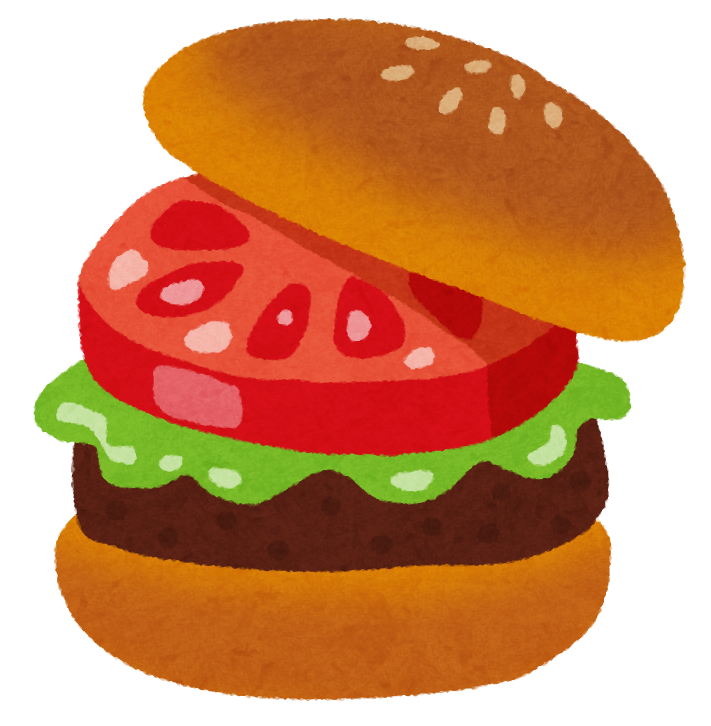

關於「踏溯台南」
「踏溯台南」課程，可以說是認識台灣課程的深化
這個課程乍看是地方性的，有別於認識台灣課程的國家性，但是這個課程以行動踏溯在地的生活脈絡，比起認識台灣課程更貼近台灣土地的溫度。而當一個學生對大學所在地有過這樣的行動踏溯，也就會自然而然地對自己的家鄉，乃至更多別的空間產生同樣的行動欲求。如果其他的大學，也能夠開設類似的課程，讓學生從身邊開始踏溯這塊土地的各種故事，那麼將來年輕世代以行動發掘問題並以行動解決問題的能力，將使台灣有更大的優質化機會。
從另一個角度來看，難得的在地踏溯題材，學生利用機會調查研究在地困境，將來投入各行各業重新遭遇那些議題，則以前親臨的經驗將會成為解決問題的支援意識，不致陷入抽象理論的陷阱。
「踏溯台南」，鼓勵學生從在地行動學習異質經驗，感情、審美、理念、思想、問題意識、解決方案都從實際出發，這才是以學生為主體的活教育，才能豐富學生的學習與生活。